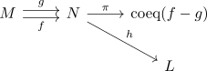
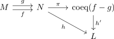

coequalizer of modules
Proposition
Let $R$ be a ring, $M,N$ be modules and $f,g: M \rightarrow N$ module-homomorphism. Then the coequalizer is the quotient module
\begin{align*}
\mathrm{coeq}(f,g) =& \mathrm{coker}(f - g) \\
=& N / \mathrm{im}(f - g) \\
\end{align*}
with
\begin{align*}
\pi: N \rightarrow N/\mathrm{im}(f-g)
n \mapsto n + \mathrm{im}(f - g)
\end{align*}
Proof
note that $f - g$ is a module homomorphism (see: Set of module homomorphisms as abelian group) Hence the module $\mathrm{coker}(f-g)$ is a welldefined module
commuting
Let $m \in M$ such that $f(m) = g(m)$. Then
universal property
Let $L$ be another module and $h: N \rightarrow L$

making this a cofork Then it follows, that
\begin{align*}
h(f(m)) = h(g(m))
\end{align*}
or
\begin{align*}
h(f(m) - g(m)) = 0
\end{align*}
Thus $\mathrm{im}(f - g) \subseteq \mathrm{ker}(h)$ and by fundamental theorem of module homomorphisms, there exists a unique morphism $h': \mathrm{coeq}(f - g) \rightarrow L$
